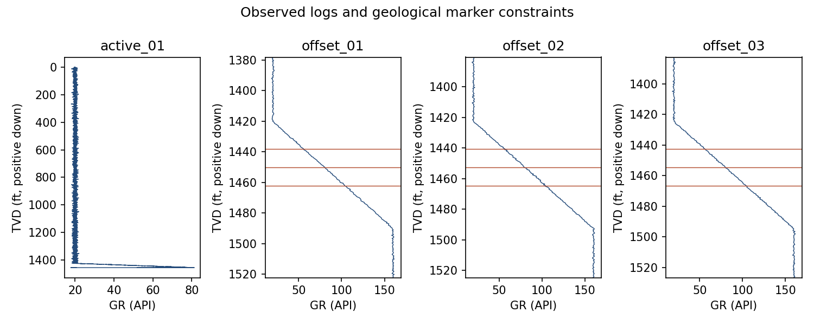

05 / Scientific software
Separate recorded decisions from actions that change a well path.
A synthetic training workbench with shared-coordinate geology, progressive observations, immutable decisions, and a controlled causal steering comparison.
One idealized 2D scenario, seed 123, with a known signed synthetic sensor calibration. These results do not establish field performance.
GeoSteering · Verified synthetic workbench release · operational use excluded
- lateral length in zone
- 38.1% → 97.2%
- shared scoring interval
- 5,000 ft
- lateral DLS violations
- 0 / 0
The problem
Replay recommendations cannot improve a path that has already been recorded. A steering comparison needs actions that actually change the trajectory, independent withheld truth, and equal scoring intervals.
My contribution
I implemented survey and LAS QC, offset-derived interpretations, minimum-curvature geometry, bounded HOLD/BUILD/DROP commands, isolated run histories, numerical scoring and PDF reporting. Real Volve data is retained separately from the synthetic study.
How it works
- Three offset wells constrain a target
- Reveal active-well observations
- Apply bounded steering commands
- Score completed trajectories against withheld truth
Decisions that shaped the release
- Use fixed spatial geology so HOLD and observation-guided actions encounter the same underlying formation.
- Keep fixed-path interpretation replay separate from causal simulation. Protect future data and truth until completion.
- Score the same 5,000-ft lateral by length, with a 24-ft target and a disclosed calibrated signed stratigraphic sensor.
- Use a stable half-vector angle formula for tiny turns and reject opposite-direction singular arcs. Capture truth relative to each run so relocated completed projects reopen independently.
Measured results
Two fresh installed-backend seed-123 runs reproduced the same numerical summary. Fresh-process reopening, relocation and interrupted-write recovery checks passed. The new verification supplement records the tested source fingerprint and 39 workflow/recovery checks. The original report below is preserved separately.
Current installed-wheel seed-123 structural_dip_01 release. Independent references, complete exports, fresh-process reopening and a relocated project were verified. The same 5,000-ft synthetic interval retains the disclosed sensor and kinematic assumptions.
| Strategy | In-zone lateral | Mean center distance | DLS violations |
|---|---|---|---|
| HOLD | 38.071621% | 27.524648 ft | 0 |
| Observation-guided | 97.174266% | 1.074121 ft | 0 |
A failure worth inspecting
Offset wells miss a localized structural disturbance.
The fixed HOLD path reaches only 38.1% in zone. Recommendations in replay cannot repair that path. The guided causal run changes the path, but benefits from a known signed sensor calibration that real gamma-ray inversion does not provide.
{
"scenario": "structural_dip_01",
"seed": 123,
"hold": {
"action_change_count": 0,
"avg_center_distance_ft": 27.52464829587919,
"clipped_command_count": 0,
"dls_violation_count": 0,
"evaluated_length_ft": 5000.0,
"in_zone_length_ft": 1903.5810398298531,
"integration_step_max_ft": 1.0,
"max_dls_deg_per_100ft": 0.0,
"max_overshoot_ft": 38.000000000000455,
"percent_in_zone": 38.07162079659706
},
"guided": {
"action_change_count": 57,
"avg_center_distance_ft": 1.074120655634311,
"clipped_command_count": 5,
"dls_violation_count": 0,
"evaluated_length_ft": 5000.0,
"in_zone_length_ft": 4858.713283922184,
"integration_step_max_ft": 1.0,
"max_dls_deg_per_100ft": 3.0000000000000884,
"max_overshoot_ft": 2.6726085285911267,
"percent_in_zone": 97.17426567844367
}
}Working artifacts


Limits and next questions
- Synthetic training and scientific demonstration only. The signed sensor, simplified kinematics, seed and geometry explain much of the result; no operational drilling performance is established.
- Exact source hashes and dirty base-revision metadata identify the local release. This is an unpublished source build; numeric reproducibility does not imply identical UUIDs, timestamps or PDF bytes.
- Real Volve data remains separately retained and lacks equivalent withheld truth. Browser/Streamlit interaction and operational drilling remain outside verified scope.
Inspect the evidence
New local verification summary (JSON) · Verification supplement (ZIP)
Compact evidence packet (ZIP) · Versioned evidence handoff (JSON)
Scientific packets preserve their original measured revisions. New browser acceptance is recorded separately in the public project repository.
Download sanitized evidence (JSON) · SHA256
Current verified synthetic case report (PDF)
Independent numerical references (JSON)
Software controls, development-set measurements and model quality retain separate denominators. Verification dates and source revisions are recorded in the evidence download. Browser acceptance covers the application workflow and does not add scientific validation.